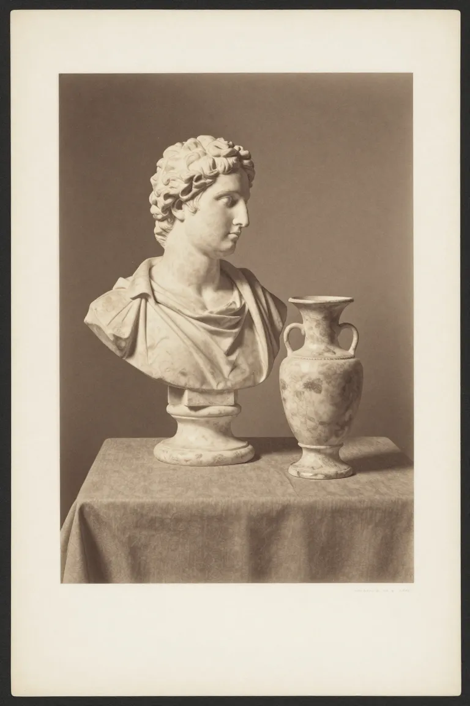

A glass or metal plate is coated with light-hardened gelatin, which swells with water to take ink in proportion to tone. The print has continuous tone with only a fine reticulation, and is often a warm brown or black on matt paper.

Core thesis
A light-hardened gelatin film that takes ink in proportion to tone prints a photograph with true continuous tone and no dot screen.
Design principles
Expose a gelatin film under a negative, so that the hardened parts take ink and the soft parts take water.
Print the film on a flat-bed press, damped and rolled up with ink before each sheet.
Show the tone as a fine, random reticulation grain, finer than a halftone dot.
Print in a brown-black or black monotone on matt paper; use more plates for a colour print.
Keep the edition under 2,000 sheets; the gelatin wears and the black weakens.
Print the picture with no plate mark and a clean margin.